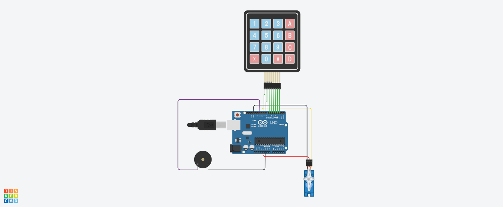

Nome do Projeto
LOCKER
Descrição do Projeto
Motivação
A segurança de objetos pessoais é uma preocupação comum no dia a dia, especialmente em ambientes onde várias pessoas circulam, como escolas, laboratórios, escritórios ou residências. Muitas soluções de segurança disponíveis são caras ou complexas para quem está iniciando na área de Sistemas Digitais. Assim, a motivação deste projeto é desenvolver um cofre eletrônico simples e de baixo custo, utilizando Arduino e componentes acessíveis. O projeto permite aos estudantes aprenderem ativação por senha, leitura de teclado matricial e controle de dispositivos eletrônicos, criando uma solução prática e funcional.
Objetivo
O objetivo deste projeto é construir um cofre eletrônico que só abre quando o usuário digita uma senha correta de 4 dígitos em um teclado matricial. O sistema utiliza um buzzer para fornecer feedback sonoro sempre que uma tecla é pressionada, assim como para indicar se a senha digitada está correta ou incorreta. Dessa forma, o projeto demonstra conceitos importantes como entrada digital, comparação de dados, lógica de autenticação e acionamento de atuadores.
Contextualização
Este projeto foi desenvolvido na disciplina de Sistemas Digitais e envolve conceitos fundamentais de eletrônica, microcontroladores e programação embarcada. O sistema é composto por um Arduino, um teclado matricial 4x4, um buzzer e um mecanismo simples de abertura (como um servo motor ou trava elétrica). Quando o usuário digita a senha, o Arduino verifica a combinação e, caso esteja correta, aciona o mecanismo de abertura do cofre. Se estiver errada, o buzzer emite um alerta de erro. A proposta se enquadra na área de automação e segurança eletrônica, mostrando como sistemas digitais podem ser aplicados para resolver problemas reais de forma criativa e acessível.
Esquema Conceitual
Palavras-Chave
- Cofre eletrônico
- Arduino
- Segurança digital
- Autenticação por senha
- Teclado matricial